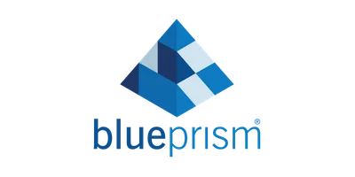

Filip Malinowski
Automatyzacja procesów i rozwój rozwiązań IT
Student Automatyzacji Procesów Biznesowych na UŁ oraz technik informatyk — łączę zaplecze techniczne z myśleniem procesowym.
O mnie
Profil zawodowy
Jestem studentem Automatyzacji Procesów Biznesowych na Uniwersytecie Łódzkim oraz technikiem informatykiem. W swoim profilu zawodowym łączę solidne zaplecze techniczne (SQL, Python, JavaScript, Docker) z analitycznym podejściem i myśleniem procesowym. Posiadam praktyczne doświadczenie w rozwoju aplikacji webowych oraz administracji infrastrukturą IT. Szukam możliwości rozwoju w dynamicznym zespole, gdzie będę mógł wykorzystać swoje umiejętności do optymalizacji procesów, wdrażania nowych technologii oraz tworzenia efektywnych rozwiązań biznesowo-technologicznych.
Historia
Doświadczenie i wykształcenie
Kliknij milestone, żeby rozwinąć szczegóły.
-
- Rozwijanie aplikacji webowej zbierającej dane o trendujących hasłach i generującej artykuły w oparciu o najpopularniejsze z nich
- Praca z technologiami JavaScript, Node.js, PostgreSQL, Docker oraz API
-
- Modelowanie procesów biznesowych
- Blue Prism
- Zarządzanie projektami
-
- Wsparcie techniczne oraz konserwacja infrastruktury biurowej i serwerowej
- Zarządzanie incydentami IT i wsparcie użytkowników końcowych
-
- Egzamin zawodowy INF.02
- Egzamin zawodowy INF.03
Stack
Umiejętności
Technologie, z którymi mam doświadczenie.
-
 JavaScript
JavaScript
-
 Node.js
Node.js
-
 Python
Python
-
 PostgreSQL
PostgreSQL
-
 Docker
Docker
-

Blue Prism
Porozmawiajmy
Kontakt
Napisz wiadomość — odpiszę tak szybko, jak to możliwe.
- Email fmalinowskyy@gmail.com
- LinkedIn linkedin.com/in/filipmalinowski24
- GitHub github.com/FilipMalinowski04